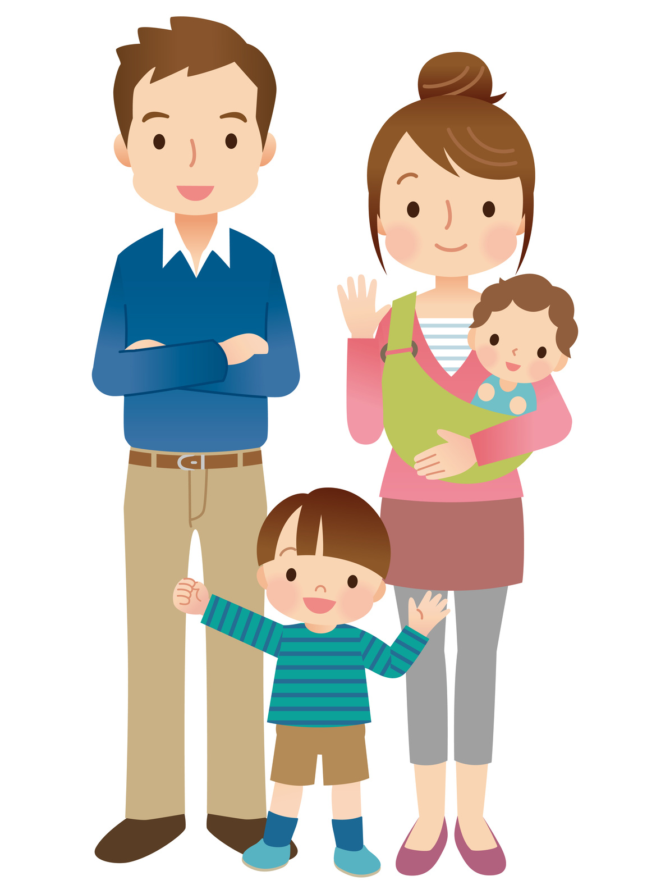

아이의 오늘과 자라는 과정을 함께 봅니다.
- 01지금의 불편
- 02성장과 생활
- 03보호자의 관찰
| 구분 | 살펴볼 점 | 알려주실 내용 |
|---|---|---|
| 지금의 불편 | 아이에게 가장 불편한 점 | 시작한 때와 달라진 모습 |
| 성장과 생활 | 식사·수면·배변과 성장 기록 | 평소의 생활 리듬 |
| 함께 상담 | 아이와 보호자가 궁금한 점 | 진료에서 먼저 묻고 싶은 질문 |
궁금한 항목을 펼쳐보세요.
필요한 설명과 자료를 주제별로 확인할 수 있습니다.
01한방 소아과＋
한방 소아과
성장기 아이들은 성인보다 강한 생명력을 가지고 있습니다.
몸의 발달이 미숙하기에 방심하면 조절능력이 떨어지고 변화가 많이 나타납니다.
열성질환이 많고 일상 속에서 다양한 증상이 보이는 경우가 많습니다.
한의학은 아이를 자연스럽게 회복시켜 건강한 성장과 발달로의 디딤돌 역할을 합니다.
성장, 비만, 허약체질
성장이 더디면 면역과 건강 발달에 영향을 줍니다. 외적인 요소로도 중요하며 아이의 자존감 저하의 큰 원인 중 하나입니다. 시기를 놓치면 바꾸기 어렵습니다. 허약체질, 식욕부진부터 성장부진까지 관심과 적극적 지지가 중요합니다.
키성장, 저체중, 체력부진, 성조숙증, 식욕부진, 비만 등을 치료합니다.
감기, 독감, 호흡기 질환
감염이 반복되면 아이의 증상과 생활 상태, 현재 복용약을 함께 살핍니다. 필요한 감염 치료와 성장·발달 상태의 평가를 함께 안내합니다.
감기, 독감, 비염, 편도염, 중이염, 파파증후군 등을 치료합니다.
면역, 알레르기 질환
비염·축농증·아토피·두드러기·천식 등이 반복되면 원인과 증상 양상을 평가합니다. 기존 검사와 치료를 함께 확인해 진료 방향을 상의합니다.
비염, 부비동염, 아토피, 두드러기, 천식 등을 치료합니다.
소아과 일반 질환
아이들은 커가면서 다양한 증상을 호소합니다. 원인없이 나타나는 기능성 질환도 많습니다. 태어난 후부터 초등학교 시기까지 복통, 변비, 야뇨, 코피, 야제, 야경, 장염, 어지럼, 두통 등 다양한 질환에 대해 풍부한 경험을 바탕으로 진료합니다.
복통, 변비, 장염, 야제, 야뇨, 코피, 다한증, 어지럼, 두통 등
청소년기 건강관리
학습과 활동이 최대로 성장하는 시기입니다. 체력, 집중력 등 다양한 요소를 균형있게 관리해야합니다. 공부를 잘하고 싶은 아이, 운동선수를 꿈꾸는 아이, 음악과 미술에 재능있는 아이 등 모두 다양한 신체능력의 조화를 목표로 진료합니다.
체력증진, 성장, 알레르기, 자율신경실조증 등
02물론 흔한 소아 증상과 질병도 치료합니다.＋
물론 흔한 소아 증상과 질병도 치료합니다.
매일 자주 볼 수 있는 증상에 한약을 안심하고 처방가능합니다.
"아이에게 한약을 먹여도 안전할까요?"
안심하셔도 됩니다.
한약은 아주 옛날부터 아이들에게 나타나기 쉬운 일상적인 증상이나 부조화에 따른 질병의 치료, 허약 체질의 개선에 사용되어 왔습니다.
한의사의 지시하에 복용한다면 한약은 아이에게도 매우 친절하고 부드러운 효과좋은 약이 된답니다.
‘1차 진료’라는 용어를 들어본 적이 있나요?
1차 진료는 ‘자주 접하는 질환, 증상에 대한 상담을 통해 진료하는 종합적인 의료’라는 뜻입니다.
배가 아프거나, 감기에 걸리는 것 등으로 면역이 붕괴되는 경우가 많이 있죠.
주위 환경인 어린이집, 유치원, 학교, 놀이터 등지에서 쉽게 병을 옮아오는 경우도 자주 있습니다.
그래서 아이들에게는 1차 진료가 매우 중요한데, 그런 경우 한약을 통한 치료가 매우 편하답니다.
아이들의 불편감, 증상 중에는 서양의학적으로 검사를 해도 문제가 보이지 않는 경우가 매우 많습니다.
그러한 경우에 한약을 사용하면 증상이 낫는 경우가 있습니다.
아이들이 복용하기 쉬운 시럽이나 물약 형태의 약들도 많이 있죠.
한의학에서는 증상이나 체질 등의 독자적인 진단 방법을 통해 필요한 한약을 결정합니다.
즉, 아이의 체질에 대응할 수 있는 1대1 체질별 치료가 가능한 것이죠.
03흔하지 않은 소아 증상, 질병도 치료합니다.＋

흔하지 않은 소아 증상, 질병도 치료합니다.
흔하지 않은 증상에도 한약 복용을 통해 회복되는 경우가 많습니다.
야제(밤에 우는 증상), 야뇨, 경기, 틱 등은 정말로 엄마의 마음을 애간장을 태우는 증상입니다.
엄마와 아빠의 휴식 모두 편하지 못한 것은 당연, 흔하지 않지만 모두가 불안해지는 대표적인 증상이죠.
야제(밤에 우는 증상)은 신생아에서 2세정도까지 자주 보이는 것으로,
수면(입면)에 들어가서 2시간 정도 이후부터 자주 일어나는 것입니다.
야경(경기)는 아이가 신경질적으로 히스테리컬하게 울거나 ‘킥킥’거리는 이상한 발성을 내는 상태입니다.
틱은 유아에서 학동기(주로 저학년에 보이죠) 에 자주 보이며, 자신의 의사와 관계없이 몸의 일부를 움직이는 상태입니다.
이러한 증상에 대해서 서양의학에서는 자연스럽게 낫기까지 기다리는 경우가 많이 있습니다.
이른바 ‘관찰’이라고 합니다.
하지만 양방적으로 원인 불명이라는 것이 손 놓은 채 원인이 없다는 뜻은 아닙니다.
한의학에서는 유효한 처방이 많이 있습니다.
21세기에 들면서 한약의 객관적이고, 과학적인 근거도 많이 밝혀졌습니다.
이런 증상이라면 오히려 한방이 더 나은 치료 효과를 보이는 분야라고 해도 과언이 아닐 정도입니다.
부모 스트레스의 원인이 되기 쉬운 증상, 야제, 야뇨, 경기, 틱, 파파증후군, 알러지질환 등을 혼자 걱정할 필요는 없습니다.
해온한의원 한의사와 상담을 받아보시면 어떨까요?
I 소아 진료분야
| 호흡기 허약아 | 감기, 잦은 감기, 비염, 부비동염, 중이염, 파파증후군, 기관지염, 기침, 천식, 폐렴, 수족구 등 |
| 소화기 허약아 | 복통, 설사, 변비, 소화불량, 과민성장증후군 등 |
| 편도형 허약아 | 발열, 고열, 열성경련, 발열감기, 열성체질 등 |
| 신경형 허약아 | 경기, 야뇨, 야제, 불안장애, 틱, 어지럼, 두통, 두근거림, 집중력저하, 과잉행동장애, 학습능력장애 |
| 피부 질환 | 아토피피부염, 두드러기, 각종 피부염 등 |
| 성장 발달 | 키 성장부진, 성장 장애, 발달 장애, 성조숙증, 소아 비만, 유소년 운동선수 보양, 유소년 운동선수 건강관리 등 |
아이와 진료 오기 전, 함께 챙겨주세요.
집에서 본 아이의 모습
가장 불편한 점과 시작한 때, 식사·잠·활동에서 달라진 모습을 알려주세요.
검진 기록과 복용약
가지고 있는 성장·검진 기록, 검사 결과와 약 이름을 챙겨주세요. 알레르기 이력도 함께 알려주세요.
아이도 궁금한 이야기
아이의 걱정과 보호자의 질문을 함께 나눠주세요. 이전 진료에서 어려웠던 경험도 좋습니다.
이 안내는 건강에 대한 이해를 돕는 참고 정보입니다. 증상과 질환에 대한 정확한 판단은 의료진의 진료가 필요합니다.